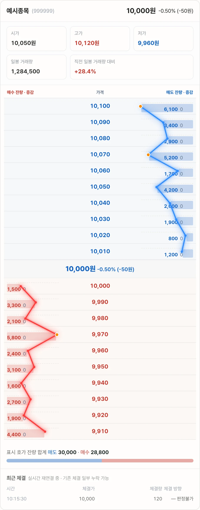

2장 주문과 체결의 이어 읽기 · 호가창 해부, 가격이 움직이는 원리, 체결과 취소, 호가 두께, 잔량 쏠림, 매물벽과 허수, 동시호가와 시간외
2장에서 호가창을 중고 거래 게시판에 비유했다. 팔겠다는 글과 사겠다는 글이 가격순으로 줄 서 있는 표다. 이 이야기는 그 표를 한 칸씩 뜯어보고, 숫자가 바뀔 때 실제로 무슨 일이 벌어지는지까지 따라간다.
처음 절반은 칸의 이름과 가격이 움직이는 원리다. 뒤쪽 절반은 같은 호가창을 보고도 사람마다 해석이 갈리는 부분(두께, 쏠림, 벽, 허수)이다. 마지막 심화 연구실은 학계에서 호가를 어떻게 숫자로 다루는지 소개한다.
아래는 이 사이트의 실제 호가창 화면이다. 위아래로 10칸씩 보인다. 위쪽 파란 칸은 팔겠다는 주문(매도호가), 아래쪽 빨간 칸은 사겠다는 주문(매수호가)이다. 가격 옆 숫자는 그 가격에 걸려 있는 주식 수, 곧 잔량이다.

| 칸 이름 | 그림에서 | 뜻 |
|---|---|---|
| 매도1호가 | 10,010원 · 1,200주 | 지금 당장 살 수 있는 가장 싼 값과 그 값에 남은 수량 |
| 매수1호가 | 10,000원 · 1,500주 | 지금 당장 팔 수 있는 가장 비싼 값과 그 값에 남은 수량 |
| 스프레드 | 10원(0.1%) | 두 1호가의 차이. 바로 사서 바로 팔면 이만큼 잃는다 |
| 호가단위 | 10원 | 가격이 움직이는 계단 한 칸. 주가 구간마다 다르다(1장) |
| 잔량 | 각 칸 오른쪽 숫자 | 그 가격에서 아직 체결되지 않고 기다리는 주식 수 |
| 총잔량 | 매도 30,000 / 매수 28,800 | 화면에 보이는 칸의 잔량 합계. 화면 밖 호가는 빠져 있다 |
| 현재가 | 10,000원 | 마지막으로 거래가 성사된 값. 다음 체결이 일어날 값은 아니다 |
가격이 오른다는 건 누군가 매도호가를 사 버려서 그 칸을 비웠다는 뜻이다. 매수 주문이 많이 "쌓여" 있다고 오르는 게 아니다. 쌓인 주문은 기다리는 중이고, 가격을 옮기는 건 기다리지 않고 상대 호가를 치는 주문(시장가, 또는 상대 호가 가격에 낸 지정가)이다.
평균 체결가 = (1,200 × 10,010 + 800 × 10,020 + 1,000 × 10,030) ÷ 3,000 = 30,058,000 ÷ 3,000 ≈ 10,019원
떨어질 때도 같다. 누군가 시장가로 팔면 매수호가를 위에서부터 먹으며 가격이 내려간다. 그래서 호가창을 볼 때 가장 먼저 물을 질문은 "어느 쪽이 많이 쌓였나"가 아니라 "지금 어느 쪽이 상대 호가를 치고 있나"다.
매도1호가 잔량이 1,200주에서 200주로 줄었다. 사는 쪽이 1,000주를 먹은 걸까? 꼭 그렇지는 않다. 주문을 낸 사람이 취소해도 숫자는 똑같이 줄어든다. 둘을 가르는 방법은 하나다. 같은 시간에 체결 목록에 그 가격으로 거래가 찍혔는지 본다.
경우 B가 나쁜 신호라는 뜻도 아니다. 파는 사람이 "이 값엔 안 판다" 하고 주문을 더 위로 옮겼을 수도 있다. 반대로 아래쪽 매수 잔량이 늘어도 실제로 사 간 사람은 없을 수 있다. 호가창 숫자는 지금 이 순간의 마음이고, 체결은 이미 일어난 행동이다. 행동 쪽에 무게를 더 둔다.
같은 1,000만원어치를 사도 어떤 종목은 가격이 꿈쩍 않고 어떤 종목은 몇 칸씩 뛴다. 차이는 1호가 근처에 쌓인 금액이다. 이걸 호가의 두께(깊이)라고 부른다. 주식 수가 아니라 금액으로 봐야 한다. 1,000원짜리 1만주와 10만원짜리 1만주는 무게가 100배 다르다.
얇은 호가는 양쪽으로 다 위험하다. 조금만 사도 뛰지만, 조금만 팔아도 무너진다. 내가 팔 때도 내 주문이 내 가격을 끌어내린다. 그래서 얇은 종목일수록 시장가 대신 지정가로 나눠서 내는 게 기본이다.
금액만으로는 부족하다. 1억원어치 호가도 1분에 10억원씩 거래되는 종목에선 순식간에 사라지고, 하루 거래대금이 5억원인 종목에선 한참 버틴다. 그래서 두께를 최근 체결 속도로 나눠 본다.
깊이비율 = 현재가에서 1% 안의 호가 잔량 금액 ÷ 최근 1분 체결대금(그 호가를 먹는 방향만)
| 위 호가창 예시 | 1% 안 잔량 금액 | 최근 1분 체결대금 | 깊이비율 |
|---|---|---|---|
| 위쪽 매도호가(10,100원까지) | 약 3억 201만원 | 매수 체결 5억원 | 0.60배 · 얇음 |
| 아래쪽 매수호가(9,910원까지) | 약 2억 8,667만원 | 매도 체결 8천만원 | 3.58배 · 두꺼움 |
읽는 법은 이렇다. 위쪽 매도호가는 지금 들어오는 매수 체결 속도로 40초가 안 돼 다 먹힐 양이다. 아래쪽 매수호가는 지금 매도 속도로 3분 반을 버틴다. 그러니 지금 이 순간에는 위로 움직이기가 아래로 움직이기보다 쉽다.
매수 총잔량이 매도 총잔량보다 훨씬 많으면 어떻게 읽어야 할까. 여기서 해석이 둘로 갈린다. 둘 다 시장에서 흔히 쓰이는 말이고, 어느 쪽도 늘 맞지는 않는다.
역상 해석의 논리는 이렇다. 큰 물량을 사 모으려는 쪽은 자기 매수 주문을 드러내면 값이 먼저 올라 불리하다. 그래서 위쪽 매도 잔량이 두텁게 보이는 동안 그 물량을 조용히 받아 간다. 반대로 많이 팔아야 하는 쪽은 아래에 매수 잔량을 두텁게 깔아 "받쳐 준다"는 인상을 주고 위에서 물량을 넘긴다. 그러니 매도 잔량이 많은데 가격이 안 빠지면 누군가 받아 가는 중이고, 매수 잔량이 많은데 가격이 안 오르면 누군가 넘기는 중일 수 있다는 것이다.
두 해석을 가르는 열쇠는 앞 장과 같다. 잔량이 아니라 체결이다. 매도 잔량이 두꺼운데 매수 체결이 계속 그 잔량을 먹어 들어가면 역상 쪽, 아무도 안 먹고 잔량만 쌓여 있으면 단순히 팔려는 사람이 많은 것이다.
한 칸에 유독 큰 주문이 걸려 있으면 벽이라고 부른다. 위에 있으면 매도벽(저항), 아래에 있으면 매수벽(지지)으로 읽는다. 하지만 벽은 약속이 아니다. 실제로 그 값까지 가면 사라지는 일이 흔하다. 가격이 다가갈 때 빠지는 주문을 허수(스푸핑)라 부르며, 체결할 뜻 없이 시세에 영향을 주려고 주문을 넣고 빼는 행위는 시세조종으로 처벌 대상이다.
벽이 체결로 소화되면(매도벽을 매수 체결이 다 먹으면) 그 위로는 막힌 곳이 줄어든다. 흔히 말하는 "벽 돌파"다. 같은 벽이 가격이 급히 빠져서 화면 밖으로 밀려나 안 보이게 될 수도 있다. 이건 돌파가 아니라 그 반대다. 벽이 없어진 순간 캔들이 양봉인지 음봉인지 함께 본다.
현재가에서 20% 넘게 떨어진 곳, 예를 들어 상한가나 하한가 근처에 갑자기 큰 주문이 생기면 실제로 거기서 거래할 뜻보다 "이쪽으로 간다"는 인상을 주려는 경우가 많다. 그런 물량은 쏠림 계산에서 빼고 생각한다.
정규장(09:00~15:30) 대부분은 주문이 들어오는 즉시 맞는 상대가 있으면 체결된다. 이걸 접속매매라 한다. 하지만 하루에 몇 번은 주문을 모아 두었다가 한 가격에 한꺼번에 체결한다. 이걸 단일가매매(동시호가)라 부르고, 이 시간의 호가창은 읽는 법이 다르다.
호가창은 숫자가 쉴 새 없이 깜빡여서 어디부터 봐야 할지 헷갈린다. 아래 순서대로 물으면 한 번에 하나씩만 보게 된다.
종목 검색에서 종목을 열면 호가 패널 위에 이 이야기에서 다룬 내용이 배지와 표로 붙는다. 모두 참고용 표시이며 주문·자동매매와 연결되지 않는다.
| 화면 표시 | 이 이야기의 어디 | 판정 기준 |
|---|---|---|
| 호가 두께 | 4절 깊이비율 | 1% 안 잔량 금액 ÷ 최근 1분 방향별 체결대금. 0.5배 미만 매우 얇음, 1배 미만 얇음, 3배 이상 두꺼움 |
| 매도 얇음 · 매수 얇음 | 4절 5천만원 예시 | 5천만원 시장가 주문이 1호가를 넘겨 다음 칸까지 먹으면 표시(원화 종목만) |
| 매수·매도 잔량 우위 · 호가 역상 | 5절 쏠림 | 총잔량이 한쪽으로 2배 이상 |
| 매도벽 · 매수벽 · 허수 의심 | 6절 벽 | 한 칸이 다른 칸 평균보다 크게 쌓임, 현재가에서 20% 넘게 멀면 허수 의심 |
| 대량 물량 | 6절 벽 | 한 칸에 10만주 이상 |
| 시간외 진매수 · 허매수 의심 | 7절 시간외 잔량 | 시간외 잔량이 한쪽으로 2배 이상 |
| 일봉 신뢰도 | 8절 다섯째 질문 | 위 신호가 있을 때 최근 120거래일 고점 돌파·최근 20봉 안 매집봉 여부 |
기준 숫자(2배, 5천만원, 10만주 등)는 실데이터로 검증하기 전의 출발점이다. 종목 크기에 따라 맞지 않을 수 있다. 예를 들어 10만주는 대형주에서는 흔하고 고가 소형주에서는 드물다.
매도1호가 10,010원에 사고, 매수1호가 10,000원에 판다. 주당 10원, 100주면 1,000원을 스프레드로 잃는다(수수료·세금 별도).
누가 사 간 게 아니라 판매 주문이 취소된 것이다. 사는 힘이 들어왔다고 읽으면 안 된다.
3억 ÷ 1억 = 3배다. 지금 매수 속도로 3분은 버틸 양이라 두꺼운 편이다. 위로 밀어 올리기 쉽지 않은 상태다.
빼고 본다. 현재가에서 아주 먼 큰 주문은 실제 거래보다 인상을 주려는 허수일 가능성이 크다. 가격이 다가가도 남아 있는지 지켜본다.
시장미시구조 연구는 호가창을 사진이 아니라 사건의 흐름으로 본다. 주문 추가, 취소, 체결이라는 세 사건이 1호가 잔량을 바꾸고, 그 순변화가 다음 가격 변화를 얼마나 설명하는지 잰다.
짧은 구간 동안 매수1호가 쪽에서 늘어난 수요에서 매도1호가 쪽에서 늘어난 공급을 뺀 값이다. 1호가 가격이 그대로면 잔량 변화를 그대로 쓰고, 1호가 가격이 바뀌면 새 칸의 잔량 전체(또는 사라진 칸의 잔량 전체)를 더하거나 뺀다.
| 10초 동안 | 매수1호가 10,000원 | 매도1호가 10,010원 |
|---|---|---|
| 처음 | 1,500주 | 1,200주 |
| 끝 | 2,300주(+800) | 500주(−700) |
| OFI | (+800) − (−700) = +1,500주 | |
양수면 사는 쪽 압력이 컸다는 뜻이다. Cont·Kukanov·Stoikov(2014)는 미국 주식에서 짧은 구간 가격 변화가 대체로 OFI ÷ 1호가 깊이에 비례한다는 관계를 보였다. 같은 압력이라도 호가가 얇을수록 가격이 더 움직인다. 4절의 두께 이야기를 식으로 쓴 셈이다.
Kyle(1985)의 모형에서 가격 변화는 λ × 순매수 주문량이다. λ가 작으면 많이 사도 가격이 덜 움직인다. 시장이 깊다는 뜻이다. 실증에서는 5분 수익률을 같은 구간의 순매수 금액에 회귀해 λ를 추정한다.
같은 가격이면 먼저 낸 주문이 먼저 체결된다(2장). 그래서 지정가 주문의 체결 확률은 가격뿐 아니라 내 앞에 선 잔량에 달렸다. 내 앞 잔량이 클수록 체결은 늦고, 늦게 체결될수록 불리한 체결(가격이 나를 지나 반대로 갈 때만 체결)이 섞이기 쉽다.
큰 시장가 주문이 호가를 먹은 뒤 빈 칸이 얼마나 빨리 다시 채워지는지다. 금방 채워지면 유동성이 진짜로 두꺼운 것이고, 한참 비어 있으면 화면의 두께가 얇은 유동성을 가리고 있던 것이다. 측정하려면 호가 이력을 초 단위로 저장해야 한다.
호가창에 안 보이는 주문도 있다. 쪼개서 조금씩 내는 알고리즘 주문, 가격이 오면 그제야 들어오는 주문은 잔량에 미리 나타나지 않는다. 그래서 잔량 합계만으로 만든 신호는 실제 힘을 과소·과대평가할 수 있다.
① 신호가 뜬 그 순간까지의 정보만 쓴다. 신호 뒤에 확정된 일봉으로 과거 신호를 고치면 성과가 부풀려진다. ② 신호 뒤 5분·30분·종가 수익률을 같은 시간대에 신호가 없던 표본과 비교한다. 장 초반은 원래 변동이 크다. ③ 스프레드와 수수료·세금을 뺀다. 몇 틱짜리 우위는 비용에서 사라진다. ④ 강세장 하루치 표본은 거의 모든 신호를 좋아 보이게 한다. 상승장·하락장·횡보장을 나눠 기록한다.
호가창의 잔량은 지금의 마음이고 체결은 이미 한 행동이다. 가격은 상대 호가를 먹으며 움직이고, 얼마나 쉽게 움직이는지는 두께가 정한다. 쏠림·벽·허수는 체결과 시간을 함께 볼 때만 뜻이 생긴다.